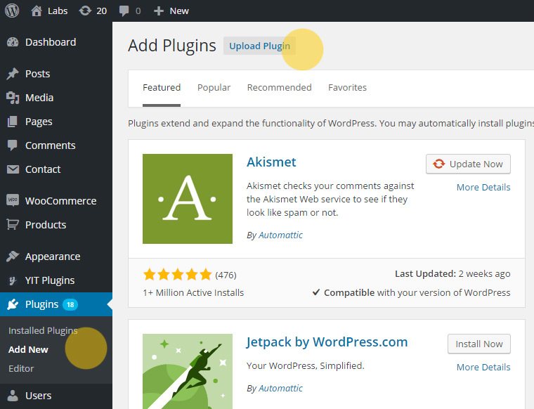
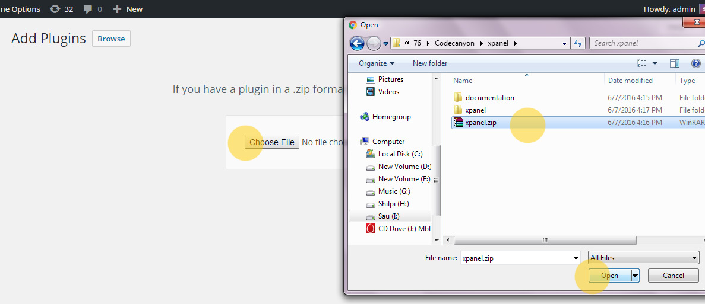
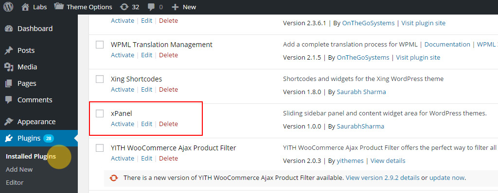
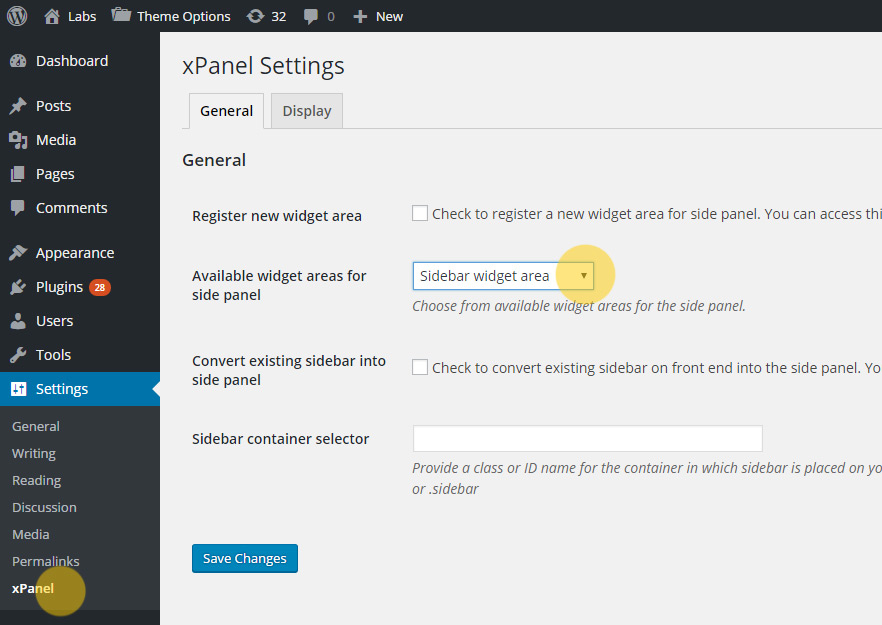
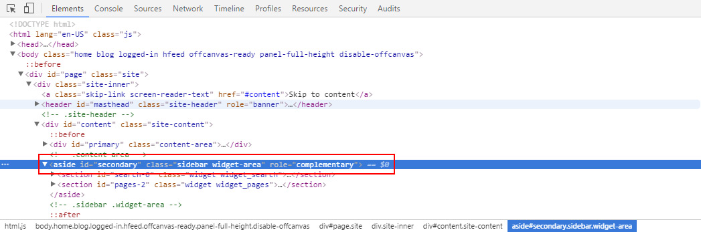
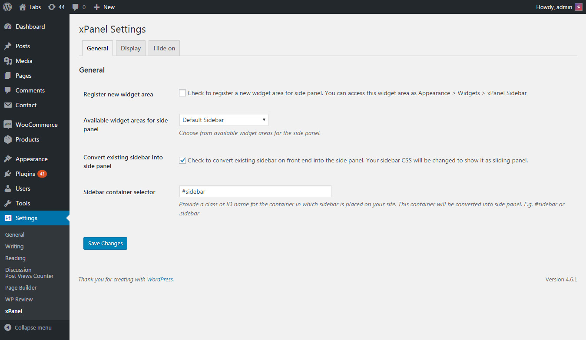
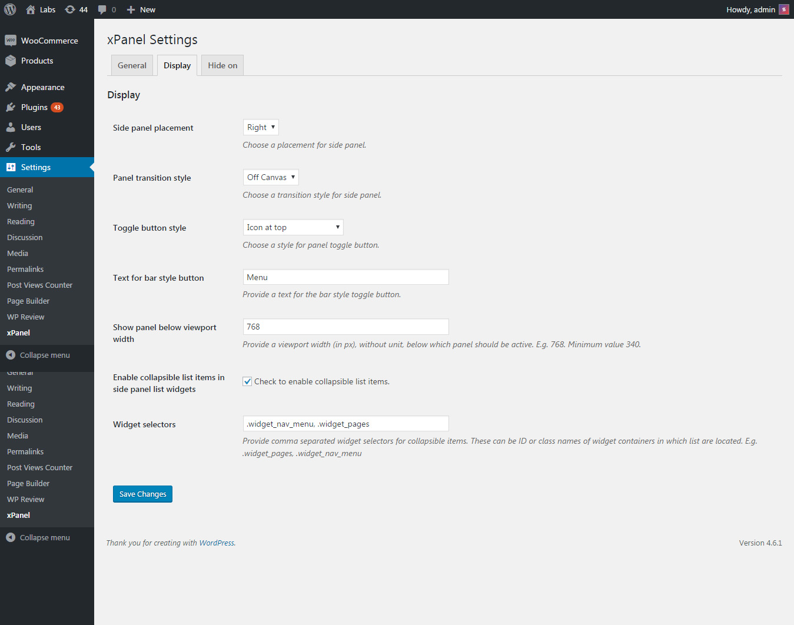
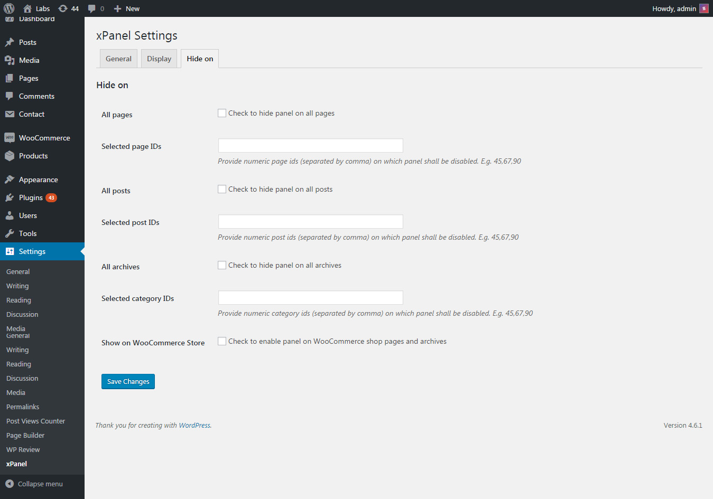

Created: June 07, 2016. Last updated: Oct 05, 2019. Version: 1.4.0. Author: SaurabhSharma. email: xconsau@gmail.com
First of all, let me thank you for showing your trust in "xPanel" plugin and purchasing it. I have handcrafted this document to lessen your efforts in configuring and using this plugin seamlessly. If you find any bug or issue which is beyond the scope of this documentation file, feel free to contact me through my CodeCanyon profile page here. Thanks so much!
If you have not set up your WordPress installation yet, you can grab a copy of latest WordPress archive here. Next, go through the installation instructions inside readme.html file and set up your WordPress installation. A detailed installation guide can be found on official WordPress Site.
1. Download plugin archive from your codecanyon.net account's downloads section. You can download main archive or installable plugin zip archive.
2. If you have downloaded main archive, unzip/extract this archive and look for the folder named xpanel. Compress/zip this folder as xpanel.zip using any compression tool like WinRAR or WinZiP. Alternatively, you can download installable plugin archive from downloads section. In either case, place the xpanel.zip on your computer so that it can be uploaded to WordPress.
3. Log in to WordPress and navigate to Plugins > Add New. Click on the "Upload PLugin" button.
Upload Plugin
4. Click on the "Choose file" button and browse the plugin ZIP file:
Browse Plugin
5. After locating the file, click on the "Install now" button. The plugin will be installed.
6. After installation, navigate to Plugins > Installed Plugins, and activate the "xPanel" plugin.
Activate Plugin
You can also install the plugin manually using FTP or File Manager. For that, log in to your site's Control Panel > File Manager, or log in to FTP and upload the extracted plugin folder to wp-content/plugins/ directory. So your installed plugin address will be wp-content/plugins/xpanel/. After uploading the folder, log in to WordPress and activate the plugin inside Plugins > Installed Plugins.
xPanel is a fixed sidebar panel which shows/hides as sliding sidebar on mobile devices. This panel can be set up in two ways, depending upon your choice.
1. By choosing existing registered widget areas and showing them in a separate side panel.
2. By converting existing widget area container on front end into a side panel.
1. Log in to your WordPress admin and navigate to Settings > xPanel. Inside "General" tab, you will see "Available widget areas for side panel", as shown below.
Choose from available widget areas
2. Choose any available widget area and Save Changes. The widget areas will be shown as available in theme. If there are no widget areas listed, you can create a new one using the "Register new widget area" checkbox. After you save changes, this new widget area will appear in the list as "xPanel Sidebar". Select this sidebar and save changes again.
3. After selecting appropriate widget area, navigate to Appearance > Widgets. Inside your chosen widget area, add the widgets as required. For example, if you chose "xPanel Sidebar", then add widgets inside xPanel Sidebar.
4. Check the site on mobile. You shall now see a sidebar panel toggle button at the bottom, or on top (as chosen from plugin settings). Clicking on the toggle button will open the side panel.
In this method, an existing widget area container of front-end is converted into a side panel. You need to provide a container class name or ID inside plugin settings.
1. In order to find out container ID or class, check your website source code in browser. For example, in Chrome, right click on the sidebar of front end and click on “Inspect element”.
Find container selector
The container selector shall be chosen from parent container which holds all the widgets in sidebar. The above example is from "TwentySixteen" theme in which container selector for sidebar is #secondary or .sidebar
3. Navigate to WordPress Settings > xPanel. Inside "General" tab > Sidebar container selector, paste the selector of your widget area. E.g. #secondary.
4. Save changes and check the site. Now it will show sidebar in normal style on desktops, whereas on mobile it will be converted into a side panel.
So far we have seen how to set up the side panel using different methods. Besides these, there are few more settings which you can apply to the panel. In order to access these settings, navigate to Settings > xPanel. You shall see a settings panel, as shown below:
Plugin Settings - General
Below is a brief reference of each plugin option and their role.
| Plugin option field | Description/Role |
| Register new widget area | Upon enabling this option, a new widget area is created with the name "xpanel sidebar". This new widget area is available inside Appearance > Widgets. |
| Available widget areas for side panel | This select dropdown will show all available widget areas of the theme (including the xpanel sidebar if its is created using previous option). The chosen widget area is shown inside side panel. |
| Convert existing sidebar into side panel | Upon enabling this checkbox, existing sidebar container of front end will be converted into a side panel. |
| Sidebar container selector | This should be an ID or Class name of the sidebar container on front end. |
Plugin Settings - Display
| Plugin option field | Description/Role |
| Side panel placement | Choose side panel placement as left or right using this option. |
| Panel transition style | Using this option you can choose two type of panel transition. Offcanvas or Overlay. |
| Toggle button style | The type of toggle button to be used. Currently it supports two styles. Icon at top, and bar style at bottom. |
| Text for bar style button | If "Bar" style toggle button is chosen, the text to be displayed on button can be changed here. |
| Show panel below viewport width | Using this option, provide a viewport width below which panel shall be shown. For example, use 768 to show panel on tablets or below devices. Or use 480 for mobiles only. |
| Enable collapsible list items in side panel list widgets | If this option is enabled, the plugin will convert list items in side panel into a collapsible accordion like menu. |
| Widget selectors | This text field requires comma separated selector names for widgets on which you wish to enable collapsible menus. For example, the WordPress custom menu widget has .widget_nav_menu class name selector. |
Plugin Settings - Hide On
| Plugin option field | Description/Role |
| All pages | Use this option for hiding side panel on all pages. |
| Selected page IDs | Using this option, you can hide panel for specific pages with numeric IDs. E.g. 10,15,45 |
| All posts | Use this option for hiding side panel on all posts. |
| Selected post IDs | Using this option, you can hide panel for specific posts with numeric IDs. E.g. 10,15,45 |
| All archives | Use this option for hiding side panel on all archives, including categories, date archives, tag archives, etc. |
| Selected category IDs | Using this option, you can hide panel for specific categories with numeric IDs. E.g. 10,15,45 |
| Show on WooCommerce Store | If you have chosen to hide panel on all archives, the panel will hide on WooCommerce shop pages too. Using this option, you can enable panel only for WooCommerce shop pages. The panel will be enabled for main shop page and product archives pages. |
The plugin uses one CSS file located as xpanel/assets/css/xpanel.style.css. You can override these styles by placing custom CSS inside theme's style.css file.
The plugin uses one JavaScript file located as xpanel/assets/js/xpanel.frontend.js. All the JS code of this plugin is located in this file only.
The php files used in this plugin are:
| php File | Description |
| xpanel.php | Main plugin core file. |
| includes/class.settings-api.php | The wrapper class for WordPress Settings API. |
| includes/functions.php | Helper functions used in the plugin. |
| includes/settings.php | Plugin admin settings panel. |
Below are some Frequently Asked Questions that may help you in finding a solution to your specific issue.
Your download zip file is not the plugin itself. It is a collection of plugin and documentation. It will be required to unzip this folder first. Next look for the folder named "xpanel". Compress/zip this folder and upload it to the wp-content/plugins/ directory via FTP or File Manager of your Hosting account.
Plugin can be updated in two ways:
2.1) From the WordPress admin: Navigate to Plugins > Installed Plugins. Deactivate the "xPanel" and delete it. Next, install the latest copy of plugin by browsing the xpanel.zip file from your computer.
2.2) From the FTP or Control Panel: Log in to your FTP or Control Panel of hosting account and locate the /wp-content/plugins/xpanel/ folder. Delete this folder and update the latest extracted folder from your computer. This method is safer than the previous one.
The plugin uses following files and resources, as listed:
jquery (as shipped with WordPress)
http://jquery.com/
Material Design Icons
https://github.com/google/material-design-icons/
WebDevs Settings API Wrapper
http://tareq.weDevs.com
WordPress for providing a platform on which we can create plugins.
Once again, thanks so much for purchasing this plugin. I'd be glad to help you if you have any questions relating to this plugin. If you have a more general question relating to the plugins on CodeCanyon, you might consider visiting the forums and asking your question in the "Item Discussion" section.
Saurabh Sharma